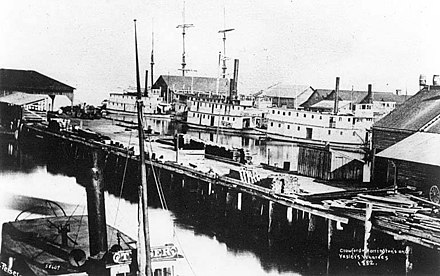
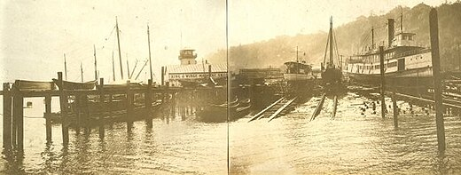
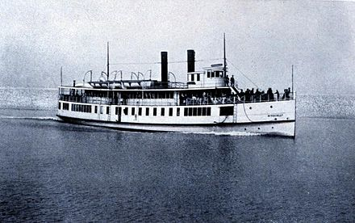

Fraser River Gold Rush
Other boats were brought in during these early times, including Traveler, Constitution, the diminutive Water Lily, Daniel Webster, Sea Bird, and the steeple-engined Wilson G. Hunt, none of them succeeding particularly well until the Fraser River Gold Rush in 1858. Puget Sound then became a shipping point for supplies and goldseekers, and the steamboats profited well. 2–16 Bellingham Bay was one jumping-off point for the rush, which was handicapped by the almost complete lack of roads or paths into the mainland of British Columbia at the time, and boats were also brought in to carry miners from Victoria to the mainland, and thereafter up the Fraser River.

Steam Navigation
In the 1860s and the 1870s, many new steamboats, most built of wood, were brought into the area or built. One of the earliest, and most famous, boats was the sidewheeler Eliza Anderson. Her owners equipped Eliza Anderson with a steam calliope which blasted out a variety of tunes, including (to the irritation of Canadians when she operated north of the border) "Yankee Doodle" and "Star Spangled Banner". 2–52 Other boats began to appear, and by 1864, J.B. Libby, Mary Woodruff, Pioneer, Alexandra, and Jenny Jones had all appeared on the sound. Steamboat operations were still irregular and unsatisfactory to the general public, as shown by a newspaper commentary of the day:
It has been generally supposed by everybody that steamboating on this Sound was an unprofitable business, and that without mail subsidies and such like emoluments it was scarcely possible for even a single steamer to make weekly trips and pay expenses. ... We do know, however, that several steamers, large and small, are constantly plying the Sound, and even with their annoying irregularity and the competition among them, they manage to keep afloat, continue in trade, and the owners of some evince a degree of disrespect for popular favor very indicative of plenty of business and fat purses. ... The arrivals and departures of steamers at both ends of the route, as well as way ports, seem especially arranged to discomfort, rather than accommodate the public. Steamers come and go like a thief in the night, and no man knows the day or the hour. After spending a whole week of sleepless nights, waiting and watching for boats, passengers frequently have to make two-forty time, in their stockings and nightcaps, to reach the landings before the steamer shoves out. Though they take a whole week to make a twenty-four-hour voyage, they hurry in and out of a way port as if the devil or a sheriff was after them, and the people generally are beginning to indulge the hope that one or the other of those persons may speedily catch and keep them.
In April 1866, the sidewheeler Cyrus Walker arrived in the sound under Capt. A.B. Gove. Seattle residents, predominantly male and apparently hard-drinking, mistook her for the promised ship full of brides that Asa Mercer was supposed to be bringing from the east coast. Supposedly a tug, Cyrus Walker also carried freight and passengers; in those days on the sound, no firm distinction was necessarily drawn between steam tugs and other steam-driven craft. Eliza Anderson was still dominating the main route on the sound at the time, which was the Olympia to Victoria run. Slow but cheap to operate, the Eliza bested all competitors, including Josie McNear, New World, and the oddly designed (as a result of her steeple engine) Wilson G. Hunt

Boom Time
The Eliza's monopoly on the main route was broken in 1869, when first she was taken off the main route. Her owners led by Captain Finch, replaced her with the newer Olympia. To make matters worse, the mail contract which had sustained Eliza was awarded to a firm of upstart competitors, led first by Captain Nash, and then by his financiers the Starrs, who had found the cash to buy the Varuna and build the sidewheeler Alida and the propeller Tacoma in the water. A fare war broke out, and on June 23, 1871, the Starrs brought into Puget Sound the then-new sidewheeler North Pacific to run against the Olympia. When North Pacific proved faster than Eliza, the fare war was ended with the customary anticompetitive agreement, whereby the Starrs would pay Finch for keeping the Eliza and Olympia at the dock. Captain Geo. E. Starr died in 1876, but his company survived him, and built in 1879 the sidewheeler George E. Starr named in his honor. 8–33 4–75
By the 1880s and 1890s, the population of the Puget Sound region had risen greatly, and steamboat technology had also improved. Many new and fast vessels were launched, such as the sternwheelers Greyhound and Bailey Gatzert and the famous propeller steamer Flyer. Roads were still poor, and of course as yet had no automobiles. The water route was the preferred way to travel between the cities on the sound. In 1890, for example, regular daily service began between Tacoma and Seattle with the Greyhound. In the early 1900s, larger and more durable steel-hulled boats were either built at Puget Sound shipyards, like the Tacoma (launched 1913) or brought in from other areas, like Indianapolis, Chippewa. The Tacoma could make the run from Seattle to Tacoma in 77 minutes dock to dock.

Final Years
A single "last voyage" of the mosquito fleet never occurred, in contrast to the famous last runs of the Georgie Burton in 1947 on the Columbia or the Moyie on Kootenay Lake in 1957. Races were staged up through the 1950s, and a few revivals on a few runs, even as late as the Second World War. By the late 1920s, though, automobiles and highways had filled the transportation needs that steamboats had once supplied, and in 1930, the Tacoma made her last run on the Seattle-Tacoma route, under the command of Captain Everett D. Coffin, the only skipper she had ever had. This marked the real end of commercial passenger activity for the steamboats. Newell and Williamson documented the occasion:
The Tacoma and the Indianapolis passed a little south of Three Tree Point. ... Capt. Coffin pulled down a window and leaned out in the driving rain. The Indianapolis floated by, a dozen squares of light topped by a star. She spoke; three long, lingering blasts. ... Capt. Coffin reached for his own whistle cord. Three long blasts. And he let the last blast die away slowly, until it was only a moan in the throat of the whistle. “That's the last time we pass each other,” he said.[15]
When Tacoma arrived at her dock in Tacoma harbor that last night, every ship in the port blew three blasts on their whistles as a salute. Andrew Foss, the owner of the great Foss tug concern, sent Foss No. 17 to help Tacoma make her landing, though two years had passed since Tacoma could afford the help of a tug. As she left that last time on her return to Seattle, Tacoma passed the hull of the Greyhound, once the fastest boat on the sound and now, minus her upper works, engines, and sternwheel, in her last service as a mudscow.